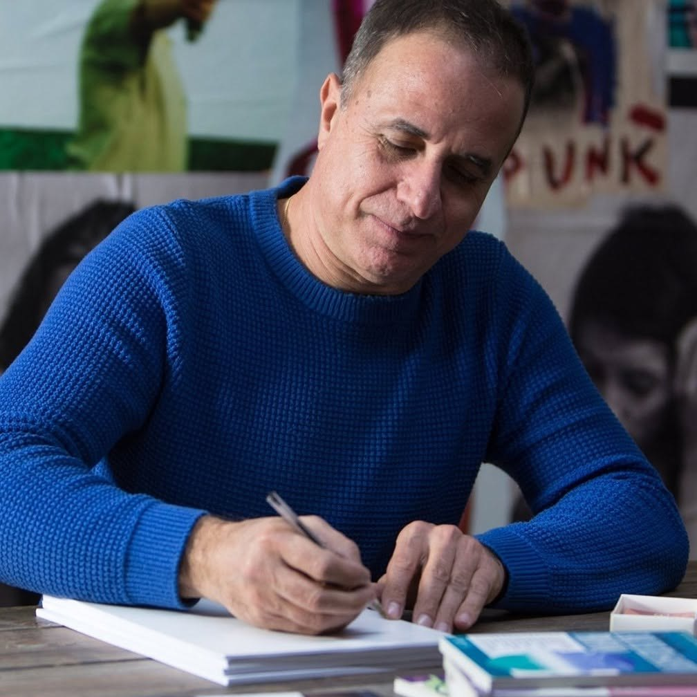

Esperienza
Quarant’anni di lavoro con il pubblico diventano attenzione al ritmo, alla presenza e all’ascolto.
Chi guida l’esperienza
Da oltre quarant’anni lavoro con persone, pubblico e gruppi attraverso spettacolo, comunicazione, ascolto e formazione.
Parliamone su WhatsApp
Il percorso
Tarocchi Liquidi nasce dall’incontro tra esperienza scenica, ascolto, narrazione e studio dei Tarocchi di Marsiglia. Il risultato è un incontro essenziale, curato e centrato sulla persona.
In sintesi
Quarant’anni di lavoro con il pubblico diventano attenzione al ritmo, alla presenza e all’ascolto.
I Tarocchi di Marsiglia sono trattati come un linguaggio di immagini, con sobrietà e precisione.
Ogni incontro viene condotto con sobrietà, misura e rispetto della domanda portata.
Pagina dedicata a Paolo Musetti, fondatore di Tarocchi Liquidi, performer, autore e facilitatore a Roma.
Prossimo passo
Scrivimi su WhatsApp: bastano poche righe per capire se questa esperienza è adatta alla tua situazione.
Parliamone su WhatsApp